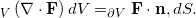

(Update 11.07.2009: I've switched to another plugin, but the rest of this post is still relevant)
When your blog often deals with technical matters, and especially math, it is very useful to be able to post complex mathematical formulae / equations. There's only so far that you can go with "ASCII-equations" like a^2 + b^2 = c^2. Being able to write is so much nicer...
Several plugins exist for this in the world of WP. In the "simple" spectrum you can find an interface to PhpMathPublisher. But when it comes to mathematical equations, you can hardly compete with Latex, and while using it is more complex, this is the best path to take if you don't want to quickly run into limitations. Recall that Latex is used by 90% of academics to publish their papers packed with mathematical equations. The Latex syntax is widely accepted and quite standard among many implementations.
Enter the WP latex plugin. Just install it following the instructions and it will use the web service provided by Wordpress.com to render inline Latex equations into images for you. The images are stored into a local cache which means that once your post was generated and viewed once, the image is static and safe on your server (you can, of course, cancel this feature if you want to).
The syntax of the plugin is very simple and you can use both inline equations
like  , or
larger equations centered and on a separate line:
, or
larger equations centered and on a separate line:

[This is, by the way, Gauss's Divergence Theorem which, I recall, was very useful in Calculus II]If Wordpress.com ever ceases providing the Latex rendering service you can always switch to another - there are plenty. This is the real power of the Latex standard - many renderers will understand the same syntax.
If this isn't hard core enough for you, you can always install your own Latex service. mathtex is a CGI script you can install on your server. It will communicate with a locally installed Latex program and an image renderer to generate images from you. The problem is - it's not very simple to install Latex on a shared hosting account. It's possible though, and many people have done it. So if you don't feel "safe" enough using a remote web service for rendering equations, you can always spend some extra effort and roll your own. The WP latex plugin makes it easy to switch services.